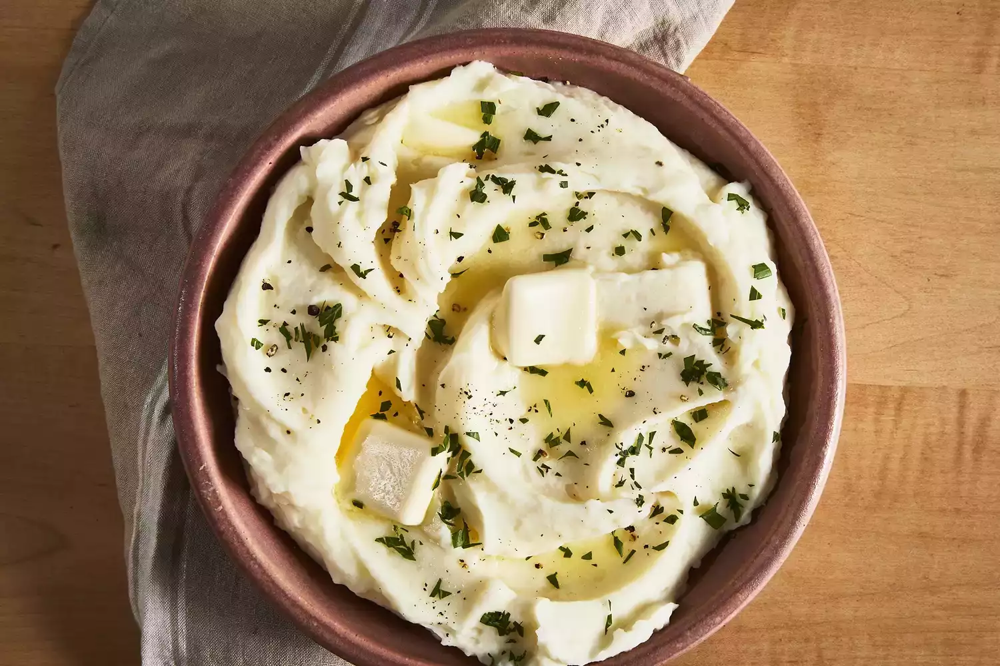

Mashed Potatoes Recipe

Description
Ingredients
- Potatoes
- That's all you need 😉
Steps
- Boil the potatoes: Add the potatoes and garlic to a large pot of salted, boiling water. Reduce the heat and simmer until the potatoes are tender.
- Heat the milk: Heat the milk and butter in a saucepan until the butter is melted.
- Mash the potatoes: Drain the potatoes, then return them to the pot. Slowly add the warm milk mixture, mashing with a potato masher or blending with a mixer until the potatoes are smooth and creamy. Season to taste.
R